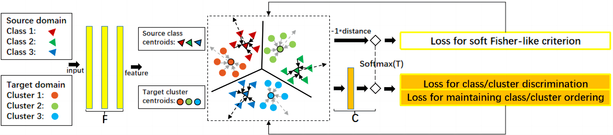

|
Kui Jia
✉, 1
|
|
|
|
|
|
|
Code
[GitHub]
|
Paper
[arXiv]
|
|
|

|
|
Motivated by the fundamental assumption for domain adaptability, we re-cast the domain adaptation problem as discriminative clustering of target data, given strong privileged information provided by the closely related, labeled source data. Technically, we use clustering objectives based on a robust variant of entropy minimization that adaptively filters target data, a soft Fisher-like criterion, and additionally the cluster ordering via centroid classification. To distill discriminative source information for target clustering, we propose to jointly train the network using parallel, supervised learning objectives over labeled source data. |
|
Unsupervised domain adaptation addresses the problem of classifying data in an unlabeled target domain, given labeled source domain data that share a common label space but follow a different distribution. Most of the recent methods take the approach of explicitly aligning feature distributions between the two domains. Differently, motivated by the fundamental assumption for domain adaptability, we re-cast the domain adaptation problem as discriminative clustering of target data, given strong privileged information provided by the closely related, labeled source data. Technically, we use clustering objectives based on a robust variant of entropy minimization that adaptively filters target data, a soft Fisher-like criterion, and additionally the cluster ordering via centroid classification. To distill discriminative source information for target clustering, we propose to jointly train the network using parallel, supervised learning objectives over labeled source data. We term our method of distilled discriminative clustering for domain adaptation as DisClusterDA. We also give geometric intuition that illustrates how constituent objectives of DisClusterDA help learn class-wisely pure, compact feature distributions. We conduct careful ablation studies and extensive experiments on five popular benchmark datasets, including a multi-source domain adaptation one. Based on commonly used backbone networks, DisClusterDA outperforms existing methods on these benchmarks. It is also interesting to observe that in our DisClusterDA framework, adding an additional loss term that explicitly learns to align class-level feature distributions across domains does harm to the adaptation performance, though more careful studies in different algorithmic frameworks are to be conducted. |
@article{tang2022unsupervised,
title={Unsupervised domain adaptation via distilled discriminative clustering},
author={Tang, Hui and Wang, Yaowei and Jia, Kui},
journal={Pattern Recognition},
volume={127},
pages={108638},
year={2022},
publisher={Pergamon}
}
Based on a template by Keyan Chen.